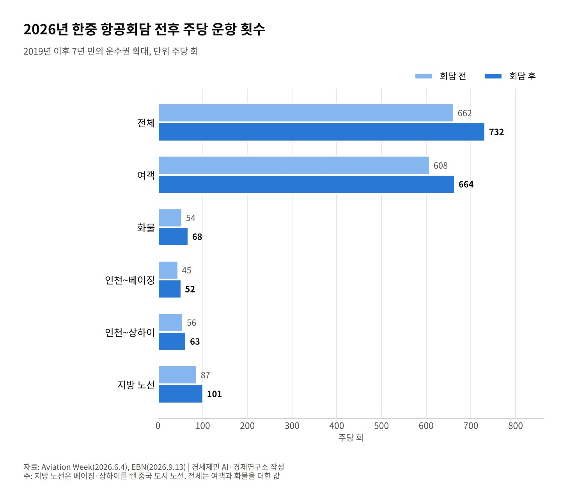
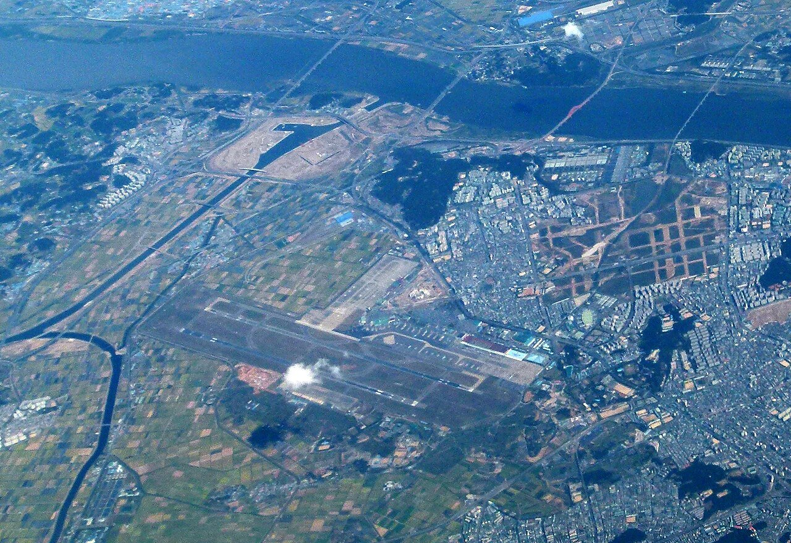

[정상외교] 한중 하늘길 7년 만에 넓혔지만 자유화는 20년째 시범, 비자가 먼저 열린 이유
5월 항공회담 운수권 주 70회 늘려 여객 664회·화물 68회, 2006년 산둥 시범 자유화는 그대로
중국은 2024년 11월 한국인 무비자 30일, 한국은 2025년 9월 중국 단체관광객 무비자
중국 항공사 올여름 일본 노선 59% 줄이고 한국 노선 17.4% 늘려, 정치가 좌석을 옮긴다
2026년 1월 5일 베이징 정상회담에서 한국과 중국은 양해각서 14건을 맺었다. 교통 분야에서는 육상 운송, 도로, 철도, 미래 모빌리티를 다루는 협력 약정과 실무 협의체가 나왔다. 항공과 해운 자유화는 명시되지 않았다.
다섯 달 뒤 하늘길이 먼저 움직였다. 두 나라는 5월 항공회담에서 운수권을 늘리기로 했다. 2019년 이후 7년 만의 확대다. 그러나 2006년 시작한 시범 자유화는 20년째 산둥성에 머물러 있다.
사람의 이동은 더 빨리 열렸다. 중국은 2024년 11월 한국인 무비자 입국을 허용했고, 한국은 2025년 9월 중국 단체관광객 무비자로 답했다. 비자가 항공·해운보다 먼저 열린 까닭을 짚는다.
1. 2006년 산둥 시범 자유화, 20년째 그 자리
두 나라는 2006년 6월 14~16일 산둥성 웨이하이 항공회담에서 시범 자유화에 합의했다. 한국은 전 지역을, 중국은 산둥성을 열었다. 산둥성 노선은 운항 횟수 제한을 없앴다.
전체 여객 노선은 33개 주 204회에서 43개 주 401회로 늘었다. 화물기 운항 지점은 중국 안 7곳에서 9곳으로, 운항은 주 24회에서 36회로 늘었다. 「1노선 1항공사」 원칙은 남기되 주 15회 이상 노선은 세 항공사까지 지정하게 했다.
그 뒤 자유화는 산둥 밖으로 번지지 않았다. 중국은 베이징·상하이 같은 허브 노선을 쉽게 열지 않았다. 시범은 20년 동안 시범으로 남았다.
2. 7년 만의 증편, 주 662회에서 732회로
항공 전문지 에이비에이션위크는 6월 4일 두 나라가 2019년 이후 처음으로 운수권을 넓혔다고 보도했다. 주당 운항은 662회에서 732회로 70회 는다. 여객은 608회에서 664회로, 화물은 54회에서 68회로 늘었다.
인천~베이징은 주 45회에서 52회로, 인천~상하이는 56회에서 63회로 늘었다. 베이징·상하이를 뺀 지방 노선은 주 87회에서 101회가 됐다. 이 노선별 수치는 EBN 보도에서도 같게 확인된다.

수요는 이미 넘쳤다. 올해 1분기 한중 여객은 440만명으로 2019년 1분기 410만명을 넘었다. 기존 운수권을 다 써 인기 노선은 증편할 수 없었다. 이번 확대는 자유화가 아니라 묵은 수요를 뒤늦게 받아 준 조치에 가깝다.
중국 경쟁당국은 2022년 대한항공과 아시아나항공의 결합을 승인하면서 인천~베이징·상하이를 경쟁 제한 우려 노선으로 봤다. 새 항공사가 들어오면 슬롯을 넘기라는 조건을 붙였다. 하늘길의 문은 두 나라 정부가 함께 쥐고 있다.
3. 정치가 좌석을 옮긴다
항공 분석업체 OAG 자료를 보면 중일 노선 좌석은 지난여름 1540만석에서 올여름 760만석으로 줄었다. 중국 항공사는 일본 노선 공급을 59% 줄였다. 같은 기간 한국 노선 공급은 17.4% 늘렸다.
올여름 한중 노선 왕복 좌석은 1430만석으로 14.2% 늘었다. 6월 한 달 좌석은 약 200만석으로 1년 전 180만석보다 많다. 일본에서 뺀 비행기가 한국으로 왔다.
이 숫자는 하늘길이 협정만으로 움직이지 않는다는 점을 보여준다. 운수권은 두 정부가 정하지만 실제 좌석은 정치 기류와 항공사 판단이 정한다. 관계가 식으면 좌석은 한 철 만에 반으로 준다.

4. 비자는 왜 먼저 열렸나
중국은 2024년 11월 3일 한국인 무비자 입국을 발표했고 8일 시행했다. 체류는 15일이었다. 11월 22일 린젠 중국 외교부 대변인은 체류 기간을 30일로 늘린다고 밝혔다.
한국은 2025년 9월 29일 중국 단체관광객 무비자로 응했다. 지정 여행사가 모집한 단체가 최대 15일 머물 수 있다. 시한은 2026년 6월 30일까지였다. 정부는 이 조치로 중국 관광객이 100만명가량 더 올 것으로 기대했다.
비자는 한 나라 정부가 혼자 정할 수 있다. 상대의 허락도, 자국 업계의 동의도 필요 없다. 항공과 해운은 다르다. 운수권은 맞교환이고, 열면 자국 항공사와 해운사가 경쟁에 노출된다.
두 나라 모두 자국 항공사와 해운사의 몫을 의식한다. 반면 비자 개방으로 이익을 보는 관광·유통업은 손해 보는 쪽이 뚜렷하지 않다. 정치적 비용이 가장 낮은 문이 가장 먼저 열렸다.
5. 해운은 의제에서 빠졌다
1월 정상회담의 교통 협력 약정은 육상 운송과 철도, 미래 모빌리티를 다뤘다. 해운 자유화는 들어가지 않았다. 정상회담 합의문 어디에도 바닷길을 넓힌다는 문장은 없다.
해운도 항공과 같은 구조다. 자국 항구 사이 운송을 자국 배로 제한하는 연안운송 보호(카보타주)는 미국도 1920년 존스법으로 지킨다. 바닷길을 여는 일은 항구와 해운사, 조선소의 이해를 함께 건드린다.
6. 비자가 물꼬, 하늘과 바다는 그다음
순서는 분명하다. 사람이 먼저 오가고, 수요가 쌓이면 운수권이 따라온다. 올해 1분기 여객이 2019년을 넘어선 뒤에야 7년 만의 증편이 나왔다.
남은 과제는 증편을 자유화로 바꾸는 일이다. 2006년처럼 지역을 정해 시범을 넓히는 방식도 있다. 한국 단체관광객 무비자는 6월 30일 시한을 맞았다. 그 뒤 연장 여부는 이 글을 쓴 10월 21일까지 정부 공식 발표로 확인하지 못했다.
비자는 정부 결정 하나로 열렸다. 하늘과 바다는 맞교환과 산업 보호의 셈법을 넘어야 열린다. 정치 기류가 좌석을 반으로 줄이는 시대에 협정은 그 변동을 버티는 바닥이다. 20년째 시범인 자유화를 다음 단계로 옮길 때다.
참고문헌
기관 자료
- 국토교통부, 「7년 만에 한-중 운수권 확대」(보도자료), 2026년 6월 4일. https://www.molit.go.kr/USR/NEWS/m_71/dtl.jsp?id=95092077 (이번 검증에서 원문 접속이 막혀 에이비에이션위크·EBN 보도로 대조)
언론 보도
- The Korea Times, "Korea, China sign 14 MOUs on cooperation in technology, environment, other areas", 2026년 1월 5일. https://www.koreatimes.co.kr/foreignaffairs/20260105/korea-china-sign-14-mous-on-cooperation-in-technology-environment-other-areas
- 송두영, "韓·中 하늘길 더 넓어진다", 한국일보, 2006년 6월 17일. https://www.hankookilbo.com/news/article/200606170059346677
- David Casey, "China, South Korea Boost Air Services"(OAG 공급 분석 인용), Aviation Week, 2026년 6월 4일. https://aviationweek.com/air-transport/airports-networks/china-south-korea-boost-air-services
- 김태준, "중국 운수권 배분 임박…'안정적 운항 역량 갖춘 항공사 선별해야'", EBN, 2026년 9월 13일. https://www.ebn.co.kr/news/articleView.html?idxno=1724027
- Korea JoongAng Daily, "China extends visa-free entry for Korean nationals from 15 to 30 days", 2024년 11월 22일. https://www.koreajoongangdaily.com/korea/china-extends-visa-free-entry-for-korean-nationals-from-15-to-30-days/12377295
- Korea JoongAng Daily, "Tourism, retail sectors gear up for more Chinese group tourists", 2025년 9월 28일. https://www.koreajoongangdaily.com/business/tourism-retail-sectors-gear-up-for-more-chinese-group-tourists/12080857
- Reuters(Joyce Lee 외), "South Korea Bets Big on Reviving Troubled U.S. Shipbuilding to Woo Trump"(존스법 설명), gCaptain 게재, 2025년 8월 26일. https://gcaptain.com/south-korea-bets-big-on-reviving-troubled-u-s-shipbuilding-to-woo-trump/
[사진 출처]
- [사진1] Brücke-Osteuropa, "Gimpo International Airport.jpg", 위키미디어 공용, CC0. https://commons.wikimedia.org/wiki/File:Gimpo_International_Airport.jpg
※ 이 기사는 AI 프로그램 클로드를 활용해 작성했습니다.
관련기사
- [정상외교] 같은 동맹 같은 청구서, 유럽이 한국의 대미 협상을 지켜본 이유
- [정상외교] 한미정상회담 해외언론 다시 읽기, 1년 뒤 남은 것과 사라진 것
- [정상외교] 2차 한중정상회담 아홉 달, 서해에서 옮겨진 것과 남은 것
- [동맹과 국방] 군사력 세계 5위 한국, 자주국방은 어디까지 왔고 동맹은 무엇을 요구하나
저작권자 © AI경세제민 무단전재 및 재배포, AI학습 및 활용 금지